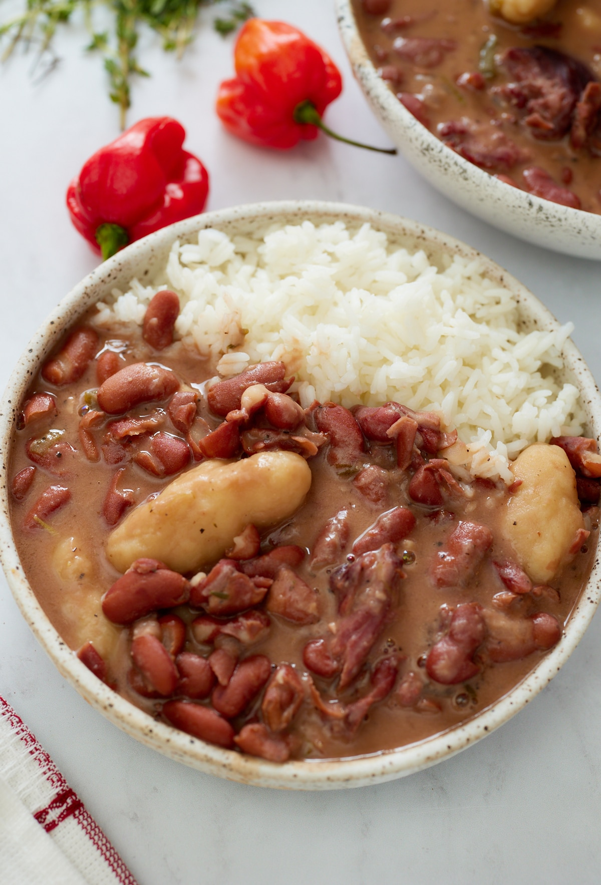

Michael's Stew Pea Recipe
Back

Description
This stew pea recipe is a deceptively easy meal to put
together, so don't be offput by the list of ingedients.
This is a meal that can feed a family of five over two days,
depending on how much you guys can eat in one serving, and
all out of one pot!
Ingredients
- 3 scallions
- 1/2 an onion
- Coconut cream
- 2 tbsp all purpose seasoning
- Garlic powder
- Salt to taste
- Kidney beans
- Turkey necks
- Flour
- Baking Powder
Steps
- Fill a pot with 3 cups of kidney beans and fill the
pot halfway with water and set the fire to high heat.
- Clean your scallions with water and cut the roots
and dead leaves off. Cut the scallions in half and
add them in the water.
- Peel and chop half an onion and add it to the pot.
- Add a bit of coconut cream to the pot.
- Sprinkle two tablespoons of all purpose seasoning
to the pot.
- Add garlic powder and salt to taste. Check every 5
minutes until seasoned to your liking.
- Check to see when the peas are soft by pressing
them with a fork until you find that they are easy
to pierce.
- When the water starts to boil, turn the temperature
to medium.
- Once peas are soft, put your turkey necks in the
pot and cover the top. Make sure the water is still
boiling lower than the top of the pot.
- Once the water in the pot has turned red and started
to thicken from the seasoning, meats, and
vegetables, turn the water low to a simmer until
stew thickens to your desired amount.